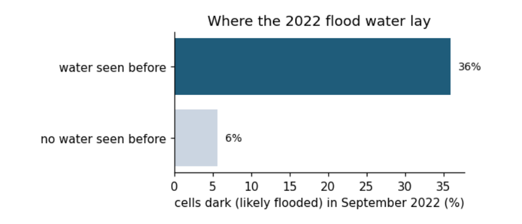

4. Snow trends and flood counts¶
Snow and floods bring two more kinds of data: a series that need not be normally distributed, which suits a rank-based trend test, and a map of categories, which suits a test on counts.
4.1 A trend test for snow¶
Thinking it through. What do we want to measure? Whether June snow cover is shrinking. What kind of data? A time series, one value per year. How do such data behave? Snow cover has skewed, weather-driven year-to-year swings, and a trend need not be a straight line. Which test, and why? Two tests that answer the question differently: the OLS slope t-test (assumes a straight line and normal noise, and gives a rate in km² per decade) and Mann–Kendall (only asks whether later years tend to be lower, so it needs neither assumption). If both agree, the result is robust.
Background. Snow reflects most of the sunlight that reaches it; bare ground absorbs most of it. When spring snow melts earlier, the ground absorbs more energy and warms, which melts more snow: the snow–albedo feedback. June is the end of the melt season in much of the Northern Hemisphere, so June snow cover is a sensitive measure of how early the snow goes. Less June snow also means earlier spring runoff for rivers fed by snowmelt, such as the Indus.
Question: has June snow cover over Northern Hemisphere land declined since 1967? Data: Rutgers University Global Snow Lab, monthly snow-covered area in km². We test the trend two ways. The OLS t-test for the slope (as above) assumes normal, independent residuals. The Mann–Kendall test only asks whether later years tend to be lower than earlier ones: it counts concordant and discordant pairs, which is Kendall's τ between year and value. It needs no normality and is common for hydrological and snow series.
s = pd.read_csv(DATA / "nh_snow.txt", sep=r"\s+", header=None, names=["year", "month", "km2"])
june = s[(s.month == 6) & s.year.between(1967, 2025)].copy()
june["mkm2"] = june.km2 / 1e6
fit = stats.linregress(june.year, june.mkm2)
tau, p_mk = stats.kendalltau(june.year, june.mkm2)
resid = june.mkm2 - (fit.intercept + fit.slope * june.year)
r1 = np.corrcoef(resid[:-1], resid[1:])[0, 1]
print(f"June snow cover, {june.year.min()}-{june.year.max()}, n = {len(june)}")
print(f"OLS slope = {fit.slope * 10:.2f} million km² per decade, t = {fit.slope / fit.stderr:.1f}, p = {fit.pvalue:.1e}")
print(f"Mann-Kendall (Kendall tau with year) tau = {tau:.2f}, p = {p_mk:.1e}")
print(f"residual lag-1 autocorrelation r1 = {r1:.2f}")
first, last = june.mkm2.iloc[:10].mean(), june.mkm2.iloc[-10:].mean()
print(f"first ten years mean {first:.1f}, last ten years {last:.1f} million km² ({100 * (last / first - 1):.0f}%)")
fig, ax = plt.subplots(figsize=(7, 2.8))
ax.plot(june.year, june.mkm2, "o-", ms=3, color="#1f5c7a")
ax.plot(june.year, fit.intercept + fit.slope * june.year, color="#b91c1c")
ax.set(xlabel="Year", ylabel="Snow-covered area (million km²)", title="June snow cover, Northern Hemisphere land")
plt.tight_layout(); plt.show()
June snow cover, 1967-2025, n = 58
OLS slope = -1.19 million km² per decade, t = -9.9, p = 7.1e-14
Mann-Kendall (Kendall tau with year) tau = -0.61, p = 1.9e-11
residual lag-1 autocorrelation r1 = 0.06
first ten years mean 11.6, last ten years 6.5 million km² (-44%)

How to read the figure. Each dot is one June (x: year; y: snow-covered land in million km²). The red line is the fitted trend. A downward line means June snow has shrunk; the scatter around it is year-to-year weather.
What the result says. Both tests reject "no trend" decisively: τ is strongly negative (most later years are lower than most earlier ones) and the slope is about −1.2 million km² per decade, a 44% fall between the first and last ten years. The residuals are barely autocorrelated (r₁ ≈ 0.06), so the ordinary t-test needs no correction here; always check before assuming. τ is unitless; the slope is in million km² per decade.
4.2 Chi-square on a radar flood map¶
Thinking it through. What do we want to measure? Whether flooding in 2022 favoured places that had flooded before. What kind of data? Counts in categories: each map cell is yes/no on two questions. How do such data behave? If the two were unrelated, each row of the table would split between the columns in the same proportion as the whole map, which fixes an expected count for every cell. Which test, and why? Chi-square, which adds up the gaps between observed and expected counts; Cramér's V for the strength. Then a check on independence, because neighbouring cells of one flood are not separate pieces of evidence.
The chi-square (χ²) test of independence asks whether two categorical variables are related. Observed counts O in a table are compared with the counts E expected if the variables were independent (row total × column total / grand total): χ² = Σ (O − E)² / E, with df = (rows − 1)(columns − 1). Cramér's V (0 to 1) is the effect size.
Question: in Sindh in September 2022, were radar-dark (likely flooded) 1 km cells more common where water had been seen before? Data: mean Sentinel-1 VV backscatter in 2022 (dark means below −14.1 dB, the threshold used in the radar manual) and the JRC Global Surface Water occurrence (any water seen since 1984, occurrence > 0).
sar = pd.read_csv(DATA / "sindh_sar_1km.csv")
sar["dark_2022"] = sar.vv_2022_db < -14.1
sar["water_before"] = sar.water_occurrence_pct > 0
obs = pd.crosstab(sar.water_before, sar.dark_2022)
chi2, p, dof, exp = stats.chi2_contingency(obs, correction=False)
V = np.sqrt(chi2 / (obs.values.sum() * (min(obs.shape) - 1)))
print("observed counts (rows: water seen before; columns: dark in 2022)")
print(obs.to_string())
print("\nexpected counts if independent")
print(pd.DataFrame(exp.round(0), index=obs.index, columns=obs.columns).to_string())
print(f"\nchi-square = {chi2:.0f}, df = {dof}, p = {p:.1e}, Cramér's V = {V:.2f}")
share = sar.groupby("water_before").dark_2022.mean()
print(f"share of cells dark in 2022: where water had been seen before {share[True]:.0%}, elsewhere {share[False]:.0%} "
f"({share[True] / share[False]:.1f} times as likely)")
fig, ax = plt.subplots(figsize=(5.5, 2.6))
ax.barh(["no water seen before", "water seen before"], [share[False] * 100, share[True] * 100], color=["#cbd5e1", "#1f5c7a"])
ax.set(xlabel="cells dark (likely flooded) in September 2022 (%)", title="Where the 2022 flood water lay")
for i, v in enumerate([share[False], share[True]]):
ax.text(v * 100 + 1, i, f"{v:.0%}", va="center", fontsize=9)
plt.tight_layout(); plt.show()
observed counts (rows: water seen before; columns: dark in 2022)
dark_2022 False True
water_before
False 10002 594
True 6200 3484
expected counts if independent
dark_2022 False True
water_before
False 8465.0 2131.0
True 7737.0 1947.0
chi-square = 2905, df = 1, p = 0.0e+00, Cramér's V = 0.38
share of cells dark in 2022: where water had been seen before 36%, elsewhere 6% (6.4 times as likely)

Background. Smooth open water reflects the radar beam away from the satellite, so flooded land looks dark in Sentinel-1 images. Land that has flooded before is usually low-lying, near rivers and lakes, so we expect it to flood again. The chi-square test asks whether "dark in 2022" and "water seen before" are related at all.
How to read the output and the figure. In the observed table, rows are "water seen before: no / yes" and columns "dark in 2022: no / yes"; each number counts 1 km cells. The expected table is what the counts would be if the two had nothing to do with each other. χ² adds up how far each observed count is from its expected count. The bar chart shows the same thing as shares: of the cells in each row, how many were dark.
What the result says. Cells where water had been seen before were dark far more often than independence predicts, and p is vanishingly small. But this test assumes every cell is an independent observation. Neighbouring cells of a flood are not independent: one flooded field implies the next. With n = 20,280 the test is far too confident. One simple check is to thin the grid, keeping only cells about 10 km apart, and test again.
thin = sar[(((sar.x_utm42n - sar.x_utm42n.min()) / 1000).round() % 10 == 0) & (((sar.y_utm42n - sar.y_utm42n.min()) / 1000).round() % 10 == 0)]
obs_t = pd.crosstab(thin.water_before, thin.dark_2022)
chi2_t, p_t, dof_t, _ = stats.chi2_contingency(obs_t, correction=False)
V_t = np.sqrt(chi2_t / (obs_t.values.sum() * (min(obs_t.shape) - 1)))
print(f"thinned to {len(thin)} cells about 10 km apart: chi-square = {chi2_t:.1f}, df = {dof_t}, p = {p_t:.1e}, Cramér's V = {V_t:.2f}")
thinned to 208 cells about 10 km apart: chi-square = 28.0, df = 1, p = 1.2e-07, Cramér's V = 0.37
With 1% of the cells, χ² falls roughly in proportion to n, but Cramér's V stays about the same: the strength of the association does not depend on how many cells we count, while the p-value does. This is the general lesson: with very large n, almost everything is "significant", so report the effect size and think about how many independent observations you really have.